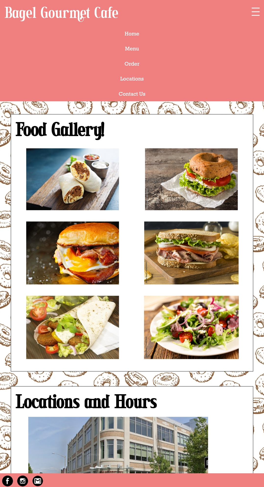

Part 3: Visual Design Style Guide

In this assignment, my task was to select and redesign one page from any website
that showed clear faults in design based on four main criteria of good design:
learnability, memorability, efficiency and accessibility.
Once chosen, I was expected to create three low fidelity sketches,
three high fidelity designs and a visual design guide, each a step towards
creating an improved version of the original website. Throughout the annotations in my designs,
I address how I was able to solve the problems identified with the page and I provide brief
notes on how to implement the page on your own.
The final design was constructed using HTML, CSS and some JavaScript.
This website provides information for a Providence-based cafe chain (three locations, only one is shown), including a menu, details on locations, and the option to contact via a form.
| Criteria | Issues Identified |
| Learnability |
|
| Memorability |
|
| Efficiency |
|
| WAIVE Errors | My Opinion |
| Alternate text is null or empty |
Agree: ... Images should have an alt text for visually impaired users |
| Empty heading |
Somewhat Agree: ... This does not affect the web page, but it may indicate a flaw within the HTML file |
| Low color contrast |
Agree: ... Users who are visually impaired may have trouble reading the text clearly |
| Missing or uninformative page title |
Somewhat Agree: ... The text font and color for the store name blends in with the background image |
